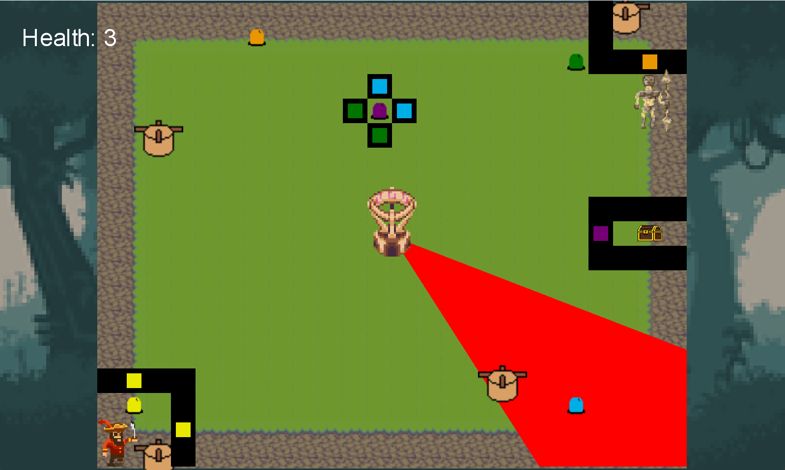
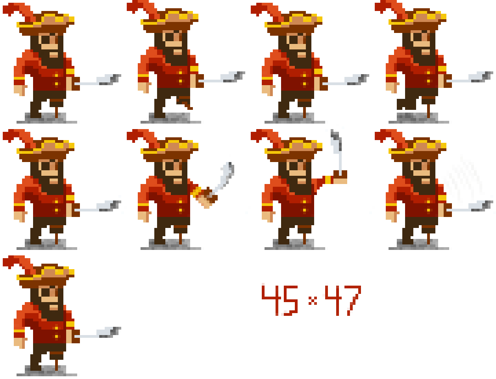
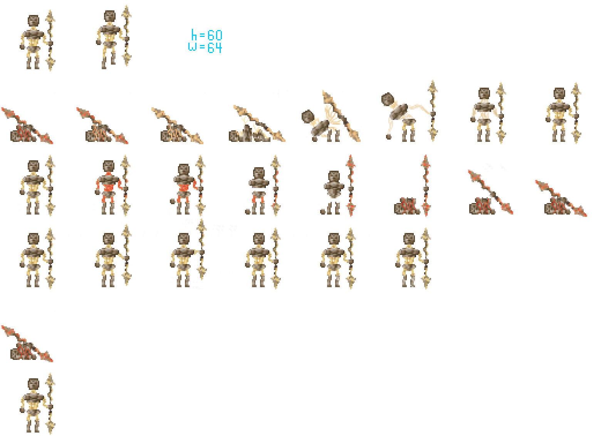
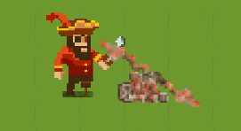
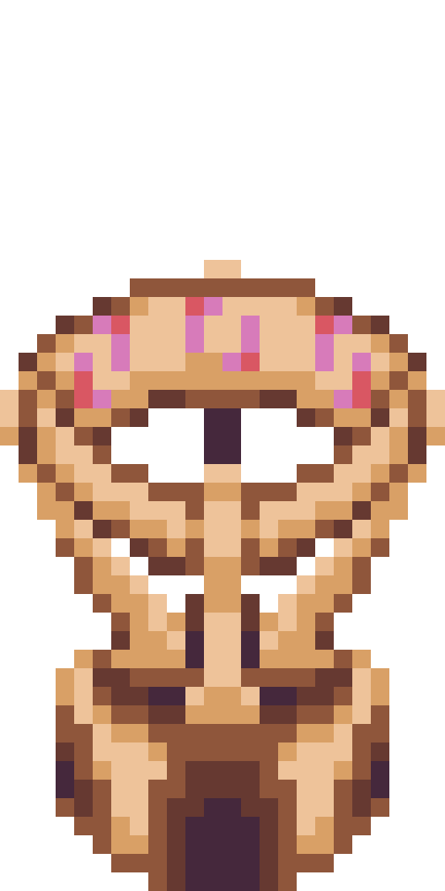

Sundial is a single-player puzzle game created as a group project in my second semester at RIT.
The class theme was "Light is Dangerous". Our game follows a pirate attempting to steal treasure from
a temple guarded by a stone figure and mysterious sundial emmiting rays of blistering heat. Taking three
hits from either ends the game.
The player needs to press color-coded buttons and rotate the sundial to open the path to the treasure.
The pirate is armed with a sword that can cut down the stone guardian, but it will reawaken when touched
by the sundial's light!
My main contributions include:

Magdalen "The Vulture" Peregrin, the protagonist of Sundial.

The Stone Guardian that protects the temple.

Magdalen and a defeated Stone Guardian.
A Capstan used to rotate the beam of light.

The Sundial that emits harmful beams of light.
NOTE: The build can be found by following this directory: Sundial -> bin -> Release -> net6.0 -> Sundial.exe
Given that this project was completed by first year students in about a month,
it has several issues. Much of the end was hard-coded to meet the course deadline.
It would likely be best to restart the project to fit best practicies.
However, the foundation of the game is strong and can be improved with: